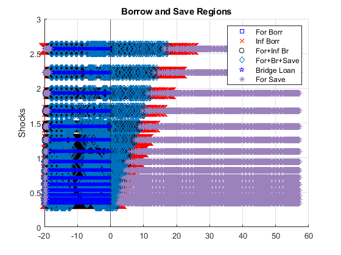
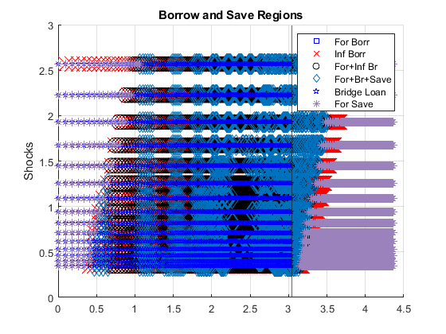
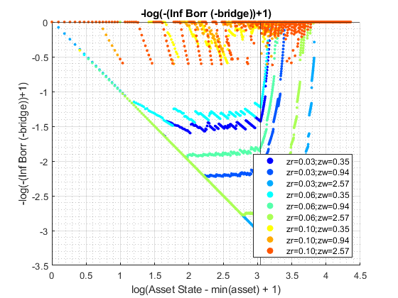
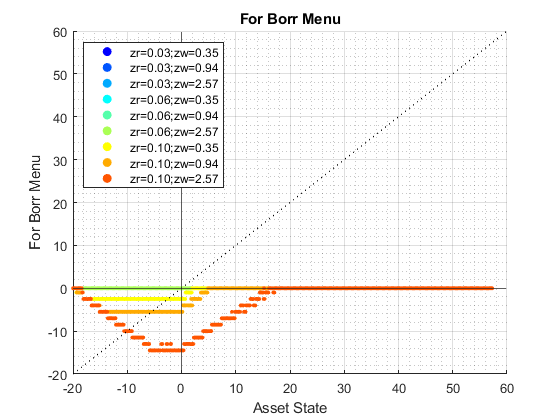
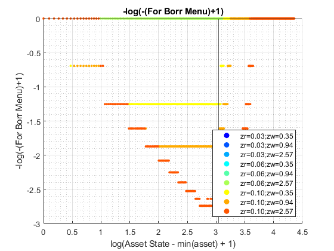
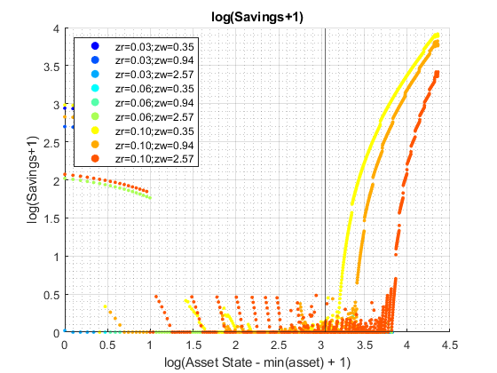
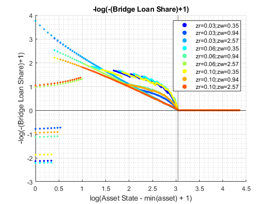
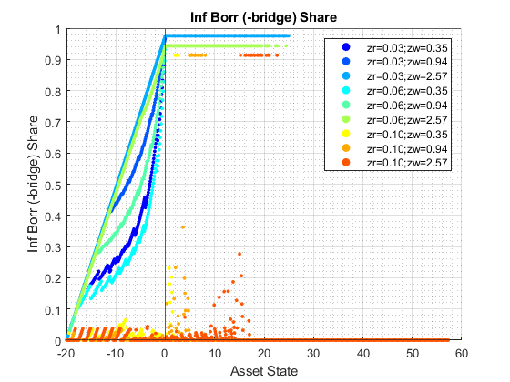

Derive Distributions for For+Inf+Borr+Save Risky + Safe Asset Interpolated-Percentage (Wrapper)
back to Fan's Dynamic Assets Repository Table of Content.
Contents
function [result_map] = ff_ipwkbzr_fibs_ds_wrapper(varargin)
FF_IPWKBZ_FIBS_DS_WRAPPER finds the stationary asset distributions
This is a warpper function.
Default
- it_subset = 5 is basic invoke quick test
- it_subset = 6 is invoke full test
- it_subset = 7 is profiling invoke
- it_subset = 8 is matlab publish
- it_subset = 9 is invoke operational (only final stats) and coh graph
it_param_set = 8; bl_input_override = true; [param_map, support_map] = ffs_ipwkbzr_fibs_set_default_param(it_param_set);
Change Parameter to Main Options
% Set Parameter Types st_param_which = 'default'; if (ismember(st_param_which, ["default"])) % default elseif ismember(st_param_which, ["ff_ipwkbzr_ds_wrapper", "ff_ipwkbzrr_ds_wrapper"]) param_map('fl_r_save') = 0.025; param_map('fl_r_fsv') = 0.025; param_map('fl_r_fbr') = 1.000; param_map('bl_bridge') = false; param_map('it_coh_bridge_perc_n') = 1; if ismember(st_param_which, ["ff_ipwkbzr_ds_wrapper"]) % ff_ipwkbzr_evf default param_map('fl_z_r_borr_min') = 0.025; param_map('fl_z_r_borr_max') = 0.025; param_map('fl_z_r_borr_n') = 1; end param_map('it_z_n') = param_map('it_z_wage_n') * param_map('fl_z_r_borr_n'); end
Adjust Parametesr
% Note: param_map and support_map can be adjusted here or outside to override defaults % param_map('it_w_perc_n') = 50; % param_map('it_ak_perc_n') = param_map('it_w_perc_n'); % param_map('it_z_n') = 15; % param_map('fl_coh_interp_grid_gap') = 0.025; % param_map('it_c_interp_grid_gap') = 0.001; % param_map('fl_w_interp_grid_gap') = 0.25; % param_map('it_w_perc_n') = 100; % param_map('it_ak_perc_n') = param_map('it_w_perc_n'); % param_map('it_z_n') = 11; % param_map('fl_coh_interp_grid_gap') = 0.1; % param_map('it_c_interp_grid_gap') = 10^-4; % param_map('fl_w_interp_grid_gap') = 0.1; % param_map('it_w_perc_n') = 100; % param_map('fl_r_save') = 0.025; % param_map('fl_c_min') = 0.02;
Set Distribution Derivation Types
% param_map('st_analytical_stationary_type') = 'loop'; % param_map('st_analytical_stationary_type') = 'vector'; param_map('st_analytical_stationary_type') = 'eigenvector';
Generate Grids
% get armt and func map [armt_map, func_map] = ffs_ipwkbzr_fibs_get_funcgrid(param_map, support_map, bl_input_override); % 1 for override default_params = {param_map support_map armt_map func_map};
Parse Parameters 1
% if varargin only has param_map and support_map, params_len = length(varargin); [default_params{1:params_len}] = varargin{:}; param_map = [param_map; default_params{1}]; support_map = [support_map; default_params{2}]; if params_len >= 1 && params_len <= 2 % If override param_map, re-generate armt and func if they are not % provided [armt_map, func_map] = ffs_ipwkbzr_fibs_get_funcgrid(param_map, support_map); else % Override all armt_map = [armt_map; default_params{3}]; func_map = [func_map; default_params{4}]; end % if profile, profile DP + Dist here support_map('bl_profile_dist') = false; % append function name st_func_name = 'ff_ipwkbzr_fibs_ds_wrapper'; support_map('st_profile_name_main') = [st_func_name support_map('st_profile_name_main')]; support_map('st_mat_name_main') = [st_func_name support_map('st_mat_name_main')]; support_map('st_img_name_main') = [st_func_name support_map('st_img_name_main')];
Parse Parameters
% param_map params_group = values(param_map, {'st_analytical_stationary_type'}); [st_analytical_stationary_type] = params_group{:}; % support_map params_group = values(support_map, ... {'st_profile_path', 'st_profile_prefix', 'st_profile_name_main', 'st_profile_suffix','bl_time'}); [st_profile_path, st_profile_prefix, st_profile_name_main, st_profile_suffix, bl_time] = params_group{:};
Start Profiler and Timer
Start Profile
if (it_param_set == 7) close all; profile off; profile on; end % Start Timer if (bl_time) tic; end
Solve DP
bl_input_override = true; result_map = ff_ipwkbzr_fibs_vf_vecsv(param_map, support_map, armt_map, func_map);
----------------------------------------
----------------------------------------
xxxxxxxxxxxxxxxxxxxxxxxxxxxxxxxxxxxxxxxx
xxxxxxxxxxxxxxxxxxxxxxxxxxxxxxxxxxxxxxxx
Begin: Show all key and value pairs from container
CONTAINER NAME: SUPPORT_MAP
----------------------------------------
Map with properties:
Count: 47
KeyType: char
ValueType: any
xxxxxxxxxxxxxxxxxxxxxxxxxxxxxxxxxxxxxxxx
xxxxxxxxxxxxxxxxxxxxxxxxxxxxxxxxxxxxxxxx
----------------------------------------
----------------------------------------
pos = 1 ; key = bl_display ; val = false
pos = 2 ; key = bl_display_defparam ; val = true
pos = 3 ; key = bl_display_dist ; val = false
pos = 4 ; key = bl_display_evf ; val = false
pos = 5 ; key = bl_display_final ; val = false
pos = 6 ; key = bl_display_final_dist ; val = true
pos = 7 ; key = bl_display_final_dist_detail ; val = true
pos = 8 ; key = bl_display_funcgrids ; val = false
pos = 9 ; key = bl_display_infbridge ; val = false
pos = 10 ; key = bl_display_minccost ; val = false
pos = 11 ; key = bl_graph ; val = true
pos = 12 ; key = bl_graph_coh_t_coh ; val = true
pos = 13 ; key = bl_graph_evf ; val = false
pos = 14 ; key = bl_graph_forinf_discrete ; val = true
pos = 15 ; key = bl_graph_forinf_pol_lvl ; val = true
pos = 16 ; key = bl_graph_forinf_pol_pct ; val = true
pos = 17 ; key = bl_graph_funcgrids ; val = false
pos = 18 ; key = bl_graph_funcgrids_detail ; val = false
pos = 19 ; key = bl_graph_onebyones ; val = true
pos = 20 ; key = bl_graph_pol_lvl ; val = false
pos = 21 ; key = bl_graph_pol_pct ; val = false
pos = 22 ; key = bl_graph_val ; val = false
pos = 23 ; key = bl_img_save ; val = false
pos = 24 ; key = bl_mat ; val = false
pos = 25 ; key = bl_post ; val = true
pos = 26 ; key = bl_profile ; val = false
pos = 27 ; key = bl_profile_dist ; val = false
pos = 28 ; key = bl_time ; val = false
pos = 29 ; key = it_display_every ; val = 20
pos = 30 ; key = it_display_final_colmax ; val = 12
pos = 31 ; key = it_display_final_rowmax ; val = 100
pos = 32 ; key = it_display_summmat_colmax ; val = 5
pos = 33 ; key = it_display_summmat_rowmax ; val = 5
pos = 34 ; key = st_img_name_main ; val = ff_ipwkbzr_fibs_vf_vecsvff_ipwkbzr_fibs_ds_wrapper_default
pos = 35 ; key = st_img_path ; val = C:/Users/fan/CodeDynaAsset//m_fibs//m_ipwkbzr_solve/img/
pos = 36 ; key = st_img_prefix ; val =
pos = 37 ; key = st_img_suffix ; val = _p8.png
pos = 38 ; key = st_mat_name_main ; val = ff_ipwkbzr_fibs_vf_vecsvff_ipwkbzr_fibs_ds_wrapper_default
pos = 39 ; key = st_mat_path ; val = C:/Users/fan/CodeDynaAsset//m_fibs//m_ipwkbzr_solve/mat/
pos = 40 ; key = st_mat_prefix ; val =
pos = 41 ; key = st_mat_suffix ; val = _p8
pos = 42 ; key = st_matimg_path_root ; val = C:/Users/fan/CodeDynaAsset//m_fibs/
pos = 43 ; key = st_profile_name_main ; val = ff_ipwkbzr_fibs_vf_vecsvff_ipwkbzr_fibs_ds_wrapper_default
pos = 44 ; key = st_profile_path ; val = C:/Users/fan/CodeDynaAsset//m_fibs//m_ipwkbzr_solve/profile/
pos = 45 ; key = st_profile_prefix ; val =
pos = 46 ; key = st_profile_suffix ; val = _p8
pos = 47 ; key = st_title_prefix ; val =
----------------------------------------
xxxxxxxxxxxxxxxxxxxxxxxxxxxxxxxxxxxxxxxx
Scalars in Container and Sizes and Basic Statistics
xxxxxxxxxxxxxxxxxxxxxxxxxxxxxxxxxxxxxxxx
i idx value
__ ___ _____
bl_display 1 1 0
bl_display_defparam 2 2 1
bl_display_dist 3 3 0
bl_display_evf 4 4 0
bl_display_final 5 5 0
bl_display_final_dist 6 6 1
bl_display_final_dist_detail 7 7 1
bl_display_funcgrids 8 8 0
bl_display_infbridge 9 9 0
bl_display_minccost 10 10 0
bl_graph 11 11 1
bl_graph_coh_t_coh 12 12 1
bl_graph_evf 13 13 0
bl_graph_forinf_discrete 14 14 1
bl_graph_forinf_pol_lvl 15 15 1
bl_graph_forinf_pol_pct 16 16 1
bl_graph_funcgrids 17 17 0
bl_graph_funcgrids_detail 18 18 0
bl_graph_onebyones 19 19 1
bl_graph_pol_lvl 20 20 0
bl_graph_pol_pct 21 21 0
bl_graph_val 22 22 0
bl_img_save 23 23 0
bl_mat 24 24 0
bl_post 25 25 1
bl_profile 26 26 0
bl_profile_dist 27 27 0
bl_time 28 28 0
it_display_every 29 29 1
it_display_final_colmax 30 30 1
it_display_final_rowmax 31 31 1
it_display_summmat_colmax 32 32 1
it_display_summmat_rowmax 33 33 1
----------------------------------------
xxxxxxxxxxxxxxxxxxxxxxxxxxxxxxxxxxxxxxxx
Strings in Container and Sizes and Basic Statistics
xxxxxxxxxxxxxxxxxxxxxxxxxxxxxxxxxxxxxxxx
i idx
__ ___
st_img_name_main 1 34
st_img_path 2 35
st_img_prefix 3 36
st_img_suffix 4 37
st_mat_name_main 5 38
st_mat_path 6 39
st_mat_prefix 7 40
st_mat_suffix 8 41
st_matimg_path_root 9 42
st_profile_name_main 10 43
st_profile_path 11 44
st_profile_prefix 12 45
st_profile_suffix 13 46
st_title_prefix 14 47
----------------------------------------
----------------------------------------
xxxxxxxxxxxxxxxxxxxxxxxxxxxxxxxxxxxxxxxx
xxxxxxxxxxxxxxxxxxxxxxxxxxxxxxxxxxxxxxxx
Begin: Show all key and value pairs from container
CONTAINER NAME: ARMT_MAP
----------------------------------------
Map with properties:
Count: 38
KeyType: char
ValueType: any
xxxxxxxxxxxxxxxxxxxxxxxxxxxxxxxxxxxxxxxx
xxxxxxxxxxxxxxxxxxxxxxxxxxxxxxxxxxxxxxxx
----------------------------------------
----------------------------------------
pos = 1 ; key = ar_a ;rown= 1 ,coln= 772
ar_a :mu= 18.6145 ,sd= 22.347 ,min= -20 ,max= 57.2773
zi_1_C1 zi_2_C2 zi_386_c386 zi_771_c771 zi_772_c772
_______ _______ ___________ ___________ ___________
zi_1_r1 -20 -19.9 18.538 57.177 57.277
pos = 2 ; key = ar_a_meshk ;rown= 772 ,coln= 1
ar_a_meshk :mu= 18.6145 ,sd= 22.347 ,min= -20 ,max= 57.2773
zi_1_c1
_______
zi_1_R1 -20
zi_2_R2 -19.9
zi_386_r386 18.538
zi_771_r771 57.177
zi_772_r772 57.277
pos = 3 ; key = ar_ak_perc ;rown= 1 ,coln= 50
ar_ak_perc :mu= 0.5 ,sd= 0.2969 ,min= 0.001 ,max= 0.999
zi_1_C1 zi_2_C2 zi_25_c25 zi_49_c49 zi_50_c50
_______ ________ _________ _________ _________
zi_1_r1 0.001 0.021367 0.48982 0.97863 0.999
pos = 4 ; key = ar_ameshk_tnext_with_r ;rown= 525000 ,coln= 5
ar_ameshk_tnext_with_r :mu= -14.9661 ,sd= 6.9834 ,min= -21.9 ,max= 51.1782
zi_1_c1 zi_2_c2 zi_3_c3 zi_4_c4 zi_5_c5
_______ _______ _______ _______ _______
zi_1_R1 -20.5 -20.85 -21.2 -21.55 -21.9
zi_2_R2 -20.5 -20.85 -21.2 -21.55 -21.9
zi_262500_r262500 -20.495 -20.845 -21.195 -21.42 -21.571
zi_524999_r524999 -18.967 -19.291 -19.615 -19.727 -19.727
zi_525000_r525000 -20.428 -20.777 -21.126 -21.237 -21.253
pos = 5 ; key = ar_aplusk_mesh ;rown= 525000 ,coln= 1
ar_aplusk_mesh :mu= -8.3548 ,sd= 9.8722 ,min= -20 ,max= 50
zi_1_c1
_______
zi_1_R1 -20
zi_2_R2 -20
zi_262500_r262500 -15.086
zi_524999_r524999 50
zi_525000_r525000 50
pos = 6 ; key = ar_coh_bridge_perc ;rown= 1 ,coln= 50
ar_coh_bridge_perc :mu= 0.5 ,sd= 0.2975 ,min= 0 ,max= 1
zi_1_C1 zi_2_C2 zi_25_c25 zi_49_c49 zi_50_c50
_______ ________ _________ _________ _________
zi_1_r1 0 0.020408 0.4898 0.97959 1
pos = 7 ; key = ar_forbrblk ;rown= 1 ,coln= 9
ar_forbrblk :mu= -7.0556 ,sd= 6.3809 ,min= -19 ,max= 0
zi_1_c1 zi_2_c2 zi_5_c5 zi_8_c8 zi_9_c9
_______ _______ _______ _______ _______
zi_1_r1 -19 -14.5 -5.5 -1 0
pos = 8 ; key = ar_forbrblk_r ;rown= 1 ,coln= 9
ar_forbrblk_r :mu= 0.065 ,sd= 0 ,min= 0.065 ,max= 0.065
zi_1_c1 zi_2_c2 zi_5_c5 zi_8_c8 zi_9_c9
_______ _______ _______ _______ _______
zi_1_r1 0.065 0.065 0.065 0.065 0.065
pos = 9 ; key = ar_interp_c_grid ;rown= 1 ,coln= 772572
ar_interp_c_grid :mu= 38.6486 ,sd= 22.3023 ,min= 0.02 ,max= 77.2773
zi_1_C1 zi_2_C2 zi_386286_c386286 zi_772571_c772571 zi_772572_c772572
_______ _______ _________________ _________________ _________________
zi_1_r1 0.02 0.0201 38.649 77.277 77.277
pos = 10 ; key = ar_interp_coh_grid ;rown= 1 ,coln= 772
ar_interp_coh_grid :mu= 18.6145 ,sd= 22.347 ,min= -20 ,max= 57.2773
zi_1_C1 zi_2_C2 zi_386_c386 zi_771_c771 zi_772_c772
_______ _______ ___________ ___________ ___________
zi_1_r1 -20 -19.9 18.538 57.177 57.277
pos = 11 ; key = ar_k_mesha ;rown= 772 ,coln= 1
ar_k_mesha :mu= 0 ,sd= 0 ,min= 0 ,max= 0
zi_1_c1
_______
zi_1_R1 0
zi_2_R2 0
zi_386_r386 0
zi_771_r771 0
zi_772_r772 0
pos = 12 ; key = ar_w_level ;rown= 1 ,coln= 700
ar_w_level :mu= 14.9786 ,sd= 20.2441 ,min= -20 ,max= 50
zi_1_C1 zi_2_C2 zi_350_c350 zi_699_c699 zi_700_c700
_______ _______ ___________ ___________ ___________
zi_1_r1 -20 -19.9 14.9 49.9 50
pos = 13 ; key = ar_w_level_full ;rown= 1 ,coln= 10500
ar_w_level_full :mu= -8.3548 ,sd= 9.8727 ,min= -20 ,max= 50
zi_1_C1 zi_2_C2 zi_5250_C5250 zi_10499_c10499 zi_10500_c10500
_______ _______ _____________ _______________ _______________
zi_1_r1 -20 -19.9 -15.086 49.9 50
pos = 14 ; key = ar_w_perc ;rown= 1 ,coln= 50
ar_w_perc :mu= 0.5 ,sd= 0.2969 ,min= 0.001 ,max= 0.999
zi_1_C1 zi_2_C2 zi_25_c25 zi_49_c49 zi_50_c50
_______ ________ _________ _________ _________
zi_1_r1 0.001 0.021367 0.48982 0.97863 0.999
pos = 15 ; key = ar_z_r_infbr ;rown= 1 ,coln= 5
ar_z_r_infbr :mu= 0.06 ,sd= 0.02767 ,min= 0.025 ,max= 0.095
zi_1_c1 zi_2_c2 zi_3_c3 zi_4_c4 zi_5_c5
_______ _______ _______ _______ _______
zi_1_r1 0.025 0.0425 0.06 0.0775 0.095
pos = 16 ; key = ar_z_r_infbr_mesh_wage_r1w2 ;rown= 1 ,coln= 75
ar_z_r_infbr_mesh_wage_r1w2 :mu= 0.06 ,sd= 0.024915 ,min= 0.025 ,max= 0.095
zi_1_C1 zi_2_C2 zi_38_c38 zi_74_c74 zi_75_c75
_______ _______ _________ _________ _________
zi_1_r1 0.025 0.0425 0.06 0.0775 0.095
pos = 17 ; key = ar_z_r_infbr_mesh_wage_w1r2 ;rown= 1 ,coln= 75
ar_z_r_infbr_mesh_wage_w1r2 :mu= 0.06 ,sd= 0.024915 ,min= 0.025 ,max= 0.095
zi_1_C1 zi_2_C2 zi_38_c38 zi_74_c74 zi_75_c75
_______ _______ _________ _________ _________
zi_1_r1 0.025 0.025 0.06 0.095 0.095
pos = 18 ; key = ar_z_r_infbr_prob ;rown= 1 ,coln= 5
ar_z_r_infbr_prob :mu= 0.2 ,sd= 0.34803 ,min= 0.00012164 ,max= 0.81093
zi_1_c1 zi_2_c2 zi_3_c3 zi_4_c4 zi_5_c5
__________ _________ ________ _______ _______
zi_1_r1 0.00012164 0.0024328 0.024328 0.16219 0.81093
pos = 19 ; key = ar_z_wage ;rown= 1 ,coln= 15
ar_z_wage :mu= 1.1347 ,sd= 0.69878 ,min= 0.34741 ,max= 2.567
zi_1_C1 zi_2_C2 zi_8_C8 zi_14_c14 zi_15_c15
_______ _______ _______ _________ _________
zi_1_r1 0.34741 0.40076 0.94436 2.2253 2.567
pos = 20 ; key = ar_z_wage_mesh_r_infbr_r1w2 ;rown= 1 ,coln= 75
ar_z_wage_mesh_r_infbr_r1w2 :mu= 1.1347 ,sd= 0.67963 ,min= 0.34741 ,max= 2.567
zi_1_C1 zi_2_C2 zi_38_c38 zi_74_c74 zi_75_c75
_______ _______ _________ _________ _________
zi_1_r1 0.34741 0.34741 0.94436 2.567 2.567
pos = 21 ; key = ar_z_wage_mesh_r_infbr_w1r2 ;rown= 1 ,coln= 75
ar_z_wage_mesh_r_infbr_w1r2 :mu= 1.1347 ,sd= 0.67963 ,min= 0.34741 ,max= 2.567
zi_1_C1 zi_2_C2 zi_38_c38 zi_74_c74 zi_75_c75
_______ _______ _________ _________ _________
zi_1_r1 0.34741 0.40076 0.94436 2.2253 2.567
pos = 22 ; key = ar_z_wage_prob ;rown= 1 ,coln= 15
ar_z_wage_prob :mu= 0.066667 ,sd= 0.060897 ,min= 0.0027089 ,max= 0.16757
zi_1_C1 zi_2_C2 zi_8_C8 zi_14_c14 zi_15_c15
_________ _________ _______ _________ _________
zi_1_r1 0.0027089 0.0069499 0.16757 0.0069499 0.0027089
pos = 23 ; key = it_ameshk_n ; val = 772
pos = 24 ; key = mt_bl_w_perc_mesh_interp_coh_grid_wneg ;rown= 50 ,coln= 772
mt_bl_w_perc_mesh_interp_coh_grid_wneg :mu= 0.60951 ,sd= 0.48787 ,min= 0 ,max= 1
zi_1_C1 zi_2_C2 zi_386_c386 zi_771_c771 zi_772_c772
_______ _______ ___________ ___________ ___________
zi_1_R1 true true true true true
zi_2_R2 true true true true true
zi_25_r25 true true true false false
zi_49_r49 true true false false false
zi_50_r50 true true false false false
pos = 25 ; key = mt_coh_bridge_perc_mesh_w_level_neg ;rown= 200 ,coln= 50
mt_coh_bridge_perc_mesh_w_level_neg :mu= 0.5 ,sd= 0.29452 ,min= 0 ,max= 1
zi_1_C1 zi_2_C2 zi_25_c25 zi_49_c49 zi_50_c50
_______ ________ _________ _________ _________
zi_1_R1 0 0.020408 0.4898 0.97959 1
zi_2_R2 0 0.020408 0.4898 0.97959 1
zi_100_r100 0 0.020408 0.4898 0.97959 1
zi_199_r199 0 0.020408 0.4898 0.97959 1
zi_200_r200 0 0.020408 0.4898 0.97959 1
pos = 26 ; key = mt_coh_w_perc_ratio_wneg ;rown= 23527 ,coln= 1
mt_coh_w_perc_ratio_wneg :mu= 0.72495 ,sd= 0.37217 ,min= 0 ,max= 1
zi_1_c1
_______
zi_1_R1 0
zi_2_R2 0
zi_11764_r11764 1
zi_23526_r23526 1
zi_23527_r23527 1
pos = 27 ; key = mt_coh_wkb ;rown= 772 ,coln= 75
mt_coh_wkb :mu= 18.6145 ,sd= 22.3328 ,min= -20 ,max= 57.2773
zi_1_C1 zi_2_C2 zi_38_c38 zi_74_c74 zi_75_c75
_______ _______ _________ _________ _________
zi_1_R1 -20 -20 -20 -20 -20
zi_2_R2 -19.9 -19.9 -19.9 -19.9 -19.9
zi_386_r386 18.538 18.538 18.538 18.538 18.538
zi_771_r771 57.177 57.177 57.177 57.177 57.177
zi_772_r772 57.277 57.277 57.277 57.277 57.277
pos = 28 ; key = mt_interp_coh_grid_mesh_w_perc ;rown= 50 ,coln= 772
mt_interp_coh_grid_mesh_w_perc :mu= 18.6145 ,sd= 22.3329 ,min= -20 ,max= 57.2773
zi_1_C1 zi_2_C2 zi_386_c386 zi_771_c771 zi_772_c772
_______ _______ ___________ ___________ ___________
zi_1_R1 -20 -19.9 18.538 57.177 57.277
zi_2_R2 -20 -19.9 18.538 57.177 57.277
zi_25_r25 -20 -19.9 18.538 57.177 57.277
zi_49_r49 -20 -19.9 18.538 57.177 57.277
zi_50_r50 -20 -19.9 18.538 57.177 57.277
pos = 29 ; key = mt_interp_coh_grid_mesh_z ;rown= 772 ,coln= 75
mt_interp_coh_grid_mesh_z :mu= 18.6145 ,sd= 22.3328 ,min= -20 ,max= 57.2773
zi_1_C1 zi_2_C2 zi_38_c38 zi_74_c74 zi_75_c75
_______ _______ _________ _________ _________
zi_1_R1 -20 -20 -20 -20 -20
zi_2_R2 -19.9 -19.9 -19.9 -19.9 -19.9
zi_386_r386 18.538 18.538 18.538 18.538 18.538
zi_771_r771 57.177 57.177 57.177 57.177 57.177
zi_772_r772 57.277 57.277 57.277 57.277 57.277
pos = 30 ; key = mt_interp_coh_grid_mesh_z_wage ;rown= 772 ,coln= 15
mt_interp_coh_grid_mesh_z_wage :mu= 18.6145 ,sd= 22.3335 ,min= -20 ,max= 57.2773
zi_1_C1 zi_2_C2 zi_8_C8 zi_14_c14 zi_15_c15
_______ _______ _______ _________ _________
zi_1_R1 -20 -20 -20 -20 -20
zi_2_R2 -19.9 -19.9 -19.9 -19.9 -19.9
zi_386_r386 18.538 18.538 18.538 18.538 18.538
zi_771_r771 57.177 57.177 57.177 57.177 57.177
zi_772_r772 57.277 57.277 57.277 57.277 57.277
pos = 31 ; key = mt_k ;rown= 50 ,coln= 10500
mt_k :mu= 5.8226 ,sd= 6.6708 ,min= 0 ,max= 69.93
zi_1_C1 zi_2_C2 zi_5250_C5250 zi_10499_c10499 zi_10500_c10500
_______ __________ _____________ _______________ _______________
zi_1_R1 0 0.00010029 0.004914 0.0699 0.07
zi_2_R2 0 0.0021429 0.105 1.4936 1.4957
zi_25_r25 0 0.049122 2.407 34.238 34.287
zi_49_r49 0 0.098144 4.809 68.406 68.504
zi_50_r50 0 0.10019 4.9091 69.83 69.93
pos = 32 ; key = mt_w_level_neg_mesh_coh_bridge_perc ;rown= 200 ,coln= 50
mt_w_level_neg_mesh_coh_bridge_perc :mu= -10.0215 ,sd= 5.7903 ,min= -20 ,max= -0.04298
zi_1_C1 zi_2_C2 zi_25_c25 zi_49_c49 zi_50_c50
________ ________ _________ _________ _________
zi_1_R1 -20 -20 -20 -20 -20
zi_2_R2 -19.9 -19.9 -19.9 -19.9 -19.9
zi_100_r100 -10.072 -10.072 -10.072 -10.072 -10.072
zi_199_r199 -0.14327 -0.14327 -0.14327 -0.14327 -0.14327
zi_200_r200 -0.04298 -0.04298 -0.04298 -0.04298 -0.04298
pos = 33 ; key = mt_w_perc_mesh_interp_coh_grid ;rown= 50 ,coln= 772
mt_w_perc_mesh_interp_coh_grid :mu= -0.69276 ,sd= 17.2218 ,min= -20 ,max= 57.2
zi_1_C1 zi_2_C2 zi_386_c386 zi_771_c771 zi_772_c772
_______ _______ ___________ ___________ ___________
zi_1_R1 -20 -20 -19.961 -19.923 -19.923
zi_2_R2 -20 -19.998 -19.177 -18.351 -18.349
zi_25_r25 -20 -19.951 -1.1233 17.803 17.852
zi_49_r49 -20 -19.902 17.715 55.528 55.626
zi_50_r50 -20 -19.9 18.5 57.1 57.2
pos = 34 ; key = mt_w_perc_mesh_interp_coh_grid_wneg ;rown= 23527 ,coln= 1
mt_w_perc_mesh_interp_coh_grid_wneg :mu= -12.2397 ,sd= 5.8332 ,min= -20 ,max= -0.00091541
zi_1_c1
_______
zi_1_R1 -20
zi_2_R2 -20
zi_11764_r11764 -4.474
zi_23526_r23526 -2.6095
zi_23527_r23527 -1.0355
pos = 35 ; key = mt_w_perc_mesh_interp_coh_grid_wpos ;rown= 15073 ,coln= 1
mt_w_perc_mesh_interp_coh_grid_wpos :mu= 17.3305 ,sd= 13.1706 ,min= 0.0036274 ,max= 57.2
zi_1_c1
________
zi_1_R1 0.051944
zi_2_R2 0.1522
zi_7537_R7537 13.967
zi_15072_r15072 55.626
zi_15073_r15073 57.2
pos = 36 ; key = mt_z_trans ;rown= 75 ,coln= 75
mt_z_trans :mu= 0.013333 ,sd= 0.040863 ,min= 0 ,max= 0.22626
zi_1_C1 zi_2_C2 zi_38_c38 zi_74_c74 zi_75_c75
__________ __________ __________ __________ __________
zi_1_R1 3.1646e-05 3.2638e-05 3.1195e-06 9.0031e-16 0
zi_2_R2 1.3662e-05 2.3868e-05 2.4049e-05 7.5897e-14 2.7009e-16
zi_38_r38 2.0899e-10 4.9882e-09 0.0067879 3.3255e-05 1.3933e-06
zi_74_r74 4.2258e-20 1.1385e-17 2.4049e-05 0.15912 0.091083
zi_75_r75 3.3344e-22 1.3449e-19 3.1195e-06 0.21758 0.21097
pos = 37 ; key = mt_z_wage_mesh_coh_wkb ;rown= 2625000 ,coln= 15
mt_z_wage_mesh_coh_wkb :mu= 1.1347 ,sd= 0.67508 ,min= 0.34741 ,max= 2.567
zi_1_C1 zi_2_C2 zi_8_C8 zi_14_c14 zi_15_c15
_______ _______ _______ _________ _________
zi_1_R1 0.34741 0.40076 0.94436 2.2253 2.567
zi_2_R2 0.34741 0.40076 0.94436 2.2253 2.567
zi_1312500_r1312500 0.34741 0.40076 0.94436 2.2253 2.567
zi_2624999_r2624999 0.34741 0.40076 0.94436 2.2253 2.567
zi_2625000_r2625000 0.34741 0.40076 0.94436 2.2253 2.567
pos = 38 ; key = mt_z_wage_mesh_interp_coh_grid ;rown= 772 ,coln= 15
mt_z_wage_mesh_interp_coh_grid :mu= 1.1347 ,sd= 0.67511 ,min= 0.34741 ,max= 2.567
zi_1_C1 zi_2_C2 zi_8_C8 zi_14_c14 zi_15_c15
_______ _______ _______ _________ _________
zi_1_R1 0.34741 0.40076 0.94436 2.2253 2.567
zi_2_R2 0.34741 0.40076 0.94436 2.2253 2.567
zi_386_r386 0.34741 0.40076 0.94436 2.2253 2.567
zi_771_r771 0.34741 0.40076 0.94436 2.2253 2.567
zi_772_r772 0.34741 0.40076 0.94436 2.2253 2.567
----------------------------------------
xxxxxxxxxxxxxxxxxxxxxxxxxxxxxxxxxxxxxxxx
Matrix in Container and Sizes and Basic Statistics
xxxxxxxxxxxxxxxxxxxxxxxxxxxxxxxxxxxxxxxx
i idx rowN colN mean std min max
__ ___ _________ __________ ________ ________ __________ ___________
ar_a 1 1 1 772 18.614 22.347 -20 57.277
ar_a_meshk 2 2 772 1 18.614 22.347 -20 57.277
ar_ak_perc 3 3 1 50 0.5 0.2969 0.001 0.999
ar_ameshk_tnext_with_r 4 4 5.25e+05 5 -14.966 6.9834 -21.9 51.178
ar_aplusk_mesh 5 5 5.25e+05 1 -8.3548 9.8722 -20 50
ar_coh_bridge_perc 6 6 1 50 0.5 0.2975 0 1
ar_forbrblk 7 7 1 9 -7.0556 6.3809 -19 0
ar_forbrblk_r 8 8 1 9 0.065 0 0.065 0.065
ar_interp_c_grid 9 9 1 7.7257e+05 38.649 22.302 0.02 77.277
ar_interp_coh_grid 10 10 1 772 18.614 22.347 -20 57.277
ar_k_mesha 11 11 772 1 0 0 0 0
ar_w_level 12 12 1 700 14.979 20.244 -20 50
ar_w_level_full 13 13 1 10500 -8.3548 9.8727 -20 50
ar_w_perc 14 14 1 50 0.5 0.2969 0.001 0.999
ar_z_r_infbr 15 15 1 5 0.06 0.02767 0.025 0.095
ar_z_r_infbr_mesh_wage_r1w2 16 16 1 75 0.06 0.024915 0.025 0.095
ar_z_r_infbr_mesh_wage_w1r2 17 17 1 75 0.06 0.024915 0.025 0.095
ar_z_r_infbr_prob 18 18 1 5 0.2 0.34803 0.00012164 0.81093
ar_z_wage 19 19 1 15 1.1347 0.69878 0.34741 2.567
ar_z_wage_mesh_r_infbr_r1w2 20 20 1 75 1.1347 0.67963 0.34741 2.567
ar_z_wage_mesh_r_infbr_w1r2 21 21 1 75 1.1347 0.67963 0.34741 2.567
ar_z_wage_prob 22 22 1 15 0.066667 0.060897 0.0027089 0.16757
mt_bl_w_perc_mesh_interp_coh_grid_wneg 23 24 50 772 0.60951 0.48787 0 1
mt_coh_bridge_perc_mesh_w_level_neg 24 25 200 50 0.5 0.29452 0 1
mt_coh_w_perc_ratio_wneg 25 26 23527 1 0.72495 0.37217 0 1
mt_coh_wkb 26 27 772 75 18.614 22.333 -20 57.277
mt_interp_coh_grid_mesh_w_perc 27 28 50 772 18.614 22.333 -20 57.277
mt_interp_coh_grid_mesh_z 28 29 772 75 18.614 22.333 -20 57.277
mt_interp_coh_grid_mesh_z_wage 29 30 772 15 18.614 22.334 -20 57.277
mt_k 30 31 50 10500 5.8226 6.6708 0 69.93
mt_w_level_neg_mesh_coh_bridge_perc 31 32 200 50 -10.021 5.7903 -20 -0.04298
mt_w_perc_mesh_interp_coh_grid 32 33 50 772 -0.69276 17.222 -20 57.2
mt_w_perc_mesh_interp_coh_grid_wneg 33 34 23527 1 -12.24 5.8332 -20 -0.00091541
mt_w_perc_mesh_interp_coh_grid_wpos 34 35 15073 1 17.33 13.171 0.0036274 57.2
mt_z_trans 35 36 75 75 0.013333 0.040863 0 0.22626
mt_z_wage_mesh_coh_wkb 36 37 2.625e+06 15 1.1347 0.67508 0.34741 2.567
mt_z_wage_mesh_interp_coh_grid 37 38 772 15 1.1347 0.67511 0.34741 2.567
----------------------------------------
xxxxxxxxxxxxxxxxxxxxxxxxxxxxxxxxxxxxxxxx
Scalars in Container and Sizes and Basic Statistics
xxxxxxxxxxxxxxxxxxxxxxxxxxxxxxxxxxxxxxxx
i idx value
_ ___ _____
it_ameshk_n 1 23 772
----------------------------------------
----------------------------------------
xxxxxxxxxxxxxxxxxxxxxxxxxxxxxxxxxxxxxxxx
xxxxxxxxxxxxxxxxxxxxxxxxxxxxxxxxxxxxxxxx
Begin: Show all key and value pairs from container
CONTAINER NAME: PARAM_MAP
----------------------------------------
Map with properties:
Count: 50
KeyType: char
ValueType: any
xxxxxxxxxxxxxxxxxxxxxxxxxxxxxxxxxxxxxxxx
xxxxxxxxxxxxxxxxxxxxxxxxxxxxxxxxxxxxxxxx
----------------------------------------
----------------------------------------
pos = 1 ; key = bl_b_is_principle ; val = true
pos = 2 ; key = bl_bridge ; val = true
pos = 3 ; key = bl_default ; val = true
pos = 4 ; key = bl_rollover ; val = true
pos = 5 ; key = fl_Amean ; val = 1
pos = 6 ; key = fl_alpha ; val = 0.36
pos = 7 ; key = fl_b_bd ; val = -20
pos = 8 ; key = fl_beta ; val = 0.94
pos = 9 ; key = fl_c_min ; val = 0.02
pos = 10 ; key = fl_coh_interp_grid_gap ; val = 0.1
pos = 11 ; key = fl_crra ; val = 1.5
pos = 12 ; key = fl_default_wprime ; val = 0
pos = 13 ; key = fl_delta ; val = 0.08
pos = 14 ; key = fl_forbrblk_brleast ; val = -1
pos = 15 ; key = fl_forbrblk_brmost ; val = -19
pos = 16 ; key = fl_forbrblk_gap ; val = -1.5
pos = 17 ; key = fl_k_max ; val = 70
pos = 18 ; key = fl_k_min ; val = 0
pos = 19 ; key = fl_nan_replace ; val = -9999
pos = 20 ; key = fl_r_fbr ; val = 0.065
pos = 21 ; key = fl_r_fsv ; val = 0.025
pos = 22 ; key = fl_r_inf ; val = 0.095
pos = 23 ; key = fl_tol_dist ; val = 1e-05
pos = 24 ; key = fl_tol_pol ; val = 1e-05
pos = 25 ; key = fl_tol_val ; val = 1e-05
pos = 26 ; key = fl_w ; val = 0.44365
pos = 27 ; key = fl_w_interp_grid_gap ; val = 0.1
pos = 28 ; key = fl_w_max ; val = 50
pos = 29 ; key = fl_w_min ; val = -20
pos = 30 ; key = fl_z_r_infbr_max ; val = 0.095
pos = 31 ; key = fl_z_r_infbr_min ; val = 0.025
pos = 32 ; key = fl_z_r_infbr_n ; val = 5
pos = 33 ; key = fl_z_r_infbr_poiss_mean ; val = 20
pos = 34 ; key = fl_z_wage_mu ; val = 0
pos = 35 ; key = fl_z_wage_rho ; val = 0.8
pos = 36 ; key = fl_z_wage_sig ; val = 0.2
pos = 37 ; key = it_ak_perc_n ; val = 50
pos = 38 ; key = it_c_interp_grid_gap ; val = 0.0001
pos = 39 ; key = it_coh_bridge_perc_n ; val = 50
pos = 40 ; key = it_maxiter_dist ; val = 1000
pos = 41 ; key = it_maxiter_val ; val = 250
pos = 42 ; key = it_tol_pol_nochange ; val = 25
pos = 43 ; key = it_w_perc_n ; val = 50
pos = 44 ; key = it_z_n ; val = 75
pos = 45 ; key = it_z_wage_n ; val = 15
pos = 46 ; key = st_analytical_stationary_type ; val = eigenvector
pos = 47 ; key = st_forbrblk_type ; val = seg3
pos = 48 ; key = st_model ; val = ipwkbzr_fibs
pos = 49 ; key = st_z_r_infbr_drv_ele_type ; val = unif
pos = 50 ; key = st_z_r_infbr_drv_prb_type ; val = poiss
----------------------------------------
xxxxxxxxxxxxxxxxxxxxxxxxxxxxxxxxxxxxxxxx
Scalars in Container and Sizes and Basic Statistics
xxxxxxxxxxxxxxxxxxxxxxxxxxxxxxxxxxxxxxxx
i idx value
__ ___ _____
bl_b_is_principle 1 1 1
bl_bridge 2 2 1
bl_default 3 3 1
bl_rollover 4 4 1
fl_Amean 5 5 1
fl_alpha 6 6 1
fl_b_bd 7 7 1
fl_beta 8 8 1
fl_c_min 9 9 1
fl_coh_interp_grid_gap 10 10 1
fl_crra 11 11 1
fl_default_wprime 12 12 0
fl_delta 13 13 1
fl_forbrblk_brleast 14 14 1
fl_forbrblk_brmost 15 15 1
fl_forbrblk_gap 16 16 1
fl_k_max 17 17 1
fl_k_min 18 18 0
fl_nan_replace 19 19 1
fl_r_fbr 20 20 1
fl_r_fsv 21 21 1
fl_r_inf 22 22 1
fl_tol_dist 23 23 1
fl_tol_pol 24 24 1
fl_tol_val 25 25 1
fl_w 26 26 1
fl_w_interp_grid_gap 27 27 1
fl_w_max 28 28 1
fl_w_min 29 29 1
fl_z_r_infbr_max 30 30 1
fl_z_r_infbr_min 31 31 1
fl_z_r_infbr_n 32 32 1
fl_z_r_infbr_poiss_mean 33 33 1
fl_z_wage_mu 34 34 0
fl_z_wage_rho 35 35 1
fl_z_wage_sig 36 36 1
it_ak_perc_n 37 37 1
it_c_interp_grid_gap 38 38 1
it_coh_bridge_perc_n 39 39 1
it_maxiter_dist 40 40 1
it_maxiter_val 41 41 1
it_tol_pol_nochange 42 42 1
it_w_perc_n 43 43 1
it_z_n 44 44 1
it_z_wage_n 45 45 1
----------------------------------------
xxxxxxxxxxxxxxxxxxxxxxxxxxxxxxxxxxxxxxxx
Strings in Container and Sizes and Basic Statistics
xxxxxxxxxxxxxxxxxxxxxxxxxxxxxxxxxxxxxxxx
i idx
_ ___
st_analytical_stationary_type 1 46
st_forbrblk_type 2 47
st_model 3 48
st_z_r_infbr_drv_ele_type 4 49
st_z_r_infbr_drv_prb_type 5 50
----------------------------------------
----------------------------------------
xxxxxxxxxxxxxxxxxxxxxxxxxxxxxxxxxxxxxxxx
xxxxxxxxxxxxxxxxxxxxxxxxxxxxxxxxxxxxxxxx
Begin: Show all key and value pairs from container
CONTAINER NAME: FUNC_MAP
----------------------------------------
Map with properties:
Count: 10
KeyType: char
ValueType: any
xxxxxxxxxxxxxxxxxxxxxxxxxxxxxxxxxxxxxxxx
xxxxxxxxxxxxxxxxxxxxxxxxxxxxxxxxxxxxxxxx
----------------------------------------
----------------------------------------
pos = 1 ; key = f_coh ; val = @(z,b_with_r,k)(f_prod(z,k)+k*(1-fl_delta)+fl_w+b_with_r)
pos = 2 ; key = f_coh_fbis ; val = @(fl_r_inf,ar_for_borr,ar_inf_borr,ar_for_save)(ar_for_borr.*(1+fl_r_fbr)+ar_inf_borr.*(1+fl_r_inf)+ar_for_save.*(1+fl_r_fsv))
pos = 3 ; key = f_coh_save ; val = @(b)(b.*(1+fl_r_fsv))
pos = 4 ; key = f_cons ; val = @(coh,bprime,kprime)(coh-kprime-bprime)
pos = 5 ; key = f_inc ; val = @(z,k,fl_r_inf,ar_for_borr,ar_inf_borr,ar_for_save)(f_prod(z,k)-(fl_delta)*k+fl_w+(ar_for_borr.*(fl_r_fbr)+ar_inf_borr.*(fl_r_inf)+ar_for_save.*(fl_r_fsv)))
pos = 6 ; key = f_prod ; val = @(z,k)((fl_Amean.*(z)).*(k.^(fl_alpha)))
pos = 7 ; key = f_util_crra ; val = @(c)(((c).^(1-fl_crra)-1)./(1-fl_crra))
pos = 8 ; key = f_util_log ; val = @(c)log(c)
pos = 9 ; key = f_util_standin ; val = @(z,b,k)f_util_log((f_coh(z,b,k)-fl_b_bd).*((f_coh(z,b,k)-fl_b_bd)>fl_c_min)+fl_c_min.*((f_coh(z,b,k)-fl_b_bd)<=fl_c_min))
pos = 10 ; key = f_util_standin_coh ; val = @(coh,fl_r_borr)f_util_log((coh-fl_b_bd).*((coh>0)&(((coh-fl_b_bd)./(1))>fl_c_min))+((coh-fl_b_bd)./(1)).*((coh<=0)&(((coh-fl_b_bd)./(1))>fl_c_min))+(fl_c_min./(1+fl_r_borr)).*((((coh-fl_b_bd)./(1))<=fl_c_min)))
----------------------------------------
xxxxxxxxxxxxxxxxxxxxxxxxxxxxxxxxxxxxxxxx
Scalars in Container and Sizes and Basic Statistics
xxxxxxxxxxxxxxxxxxxxxxxxxxxxxxxxxxxxxxxx
i idx xFunction
__ ___ _________
f_coh 1 1 1
f_coh_fbis 2 2 2
f_coh_save 3 3 3
f_cons 4 4 4
f_inc 5 5 5
f_prod 6 6 6
f_util_crra 7 7 7
f_util_log 8 8 8
f_util_standin 9 9 9
f_util_standin_coh 10 10 10
----------------------------------------
----------------------------------------
xxxxxxxxxxxxxxxxxxxxxxxxxxxxxxxxxxxxxxxx
xxxxxxxxxxxxxxxxxxxxxxxxxxxxxxxxxxxxxxxx
Begin: Show all key and value pairs from container
CONTAINER NAME: RESULT_MAP
----------------------------------------
Map with properties:
Count: 22
KeyType: char
ValueType: any
xxxxxxxxxxxxxxxxxxxxxxxxxxxxxxxxxxxxxxxx
xxxxxxxxxxxxxxxxxxxxxxxxxxxxxxxxxxxxxxxx
----------------------------------------
----------------------------------------
pos = 1 ; key = ar_pol_diff_norm ;rown= 130 ,coln= 1
ar_pol_diff_norm :mu= 133.6952 ,sd= 665.3727 ,min= 0 ,max= 5573.7858
zi_1_c1
_______
zi_1_R1 4800.3
zi_2_R2 5573.8
zi_65_R65 4.9631
zi_129_r129 0
zi_130_r130 0
pos = 2 ; key = ar_st_pol_names ; val = cl_mt_coh cl_mt_pol_a cl_mt_pol_k cl_mt_pol_c cl_mt_pol_a_principleonly cl_mt_pol_b_bridge cl_mt_pol_inf_borr_nobridge cl_mt_pol_for_borr cl_mt_pol_for_save
pos = 3 ; key = ar_val_diff_norm ;rown= 130 ,coln= 1
ar_val_diff_norm :mu= 22.8387 ,sd= 63.2929 ,min= 0.0063686 ,max= 401.777
zi_1_c1
_________
zi_1_R1 401.78
zi_2_R2 336.19
zi_65_R65 0.29357
zi_129_r129 0.006771
zi_130_r130 0.0063686
pos = 4 ; key = cl_mt_coh ;rown= 772 ,coln= 75
cl_mt_coh :mu= 18.6145 ,sd= 22.3328 ,min= -20 ,max= 57.2773
zi_1_C1 zi_2_C2 zi_38_c38 zi_74_c74 zi_75_c75
_______ _______ _________ _________ _________
zi_1_R1 -20 -20 -20 -20 -20
zi_2_R2 -19.9 -19.9 -19.9 -19.9 -19.9
zi_386_r386 18.538 18.538 18.538 18.538 18.538
zi_771_r771 57.177 57.177 57.177 57.177 57.177
zi_772_r772 57.277 57.277 57.277 57.277 57.277
pos = 5 ; key = cl_mt_cons ;rown= 772 ,coln= 75
cl_mt_cons :mu= 2.8165 ,sd= 2.5629 ,min= -19.9486 ,max= 7.2187
zi_1_C1 zi_2_C2 zi_38_c38 zi_74_c74 zi_75_c75
_______ _______ _________ _________ _________
zi_1_R1 -19.949 -19.949 -19.198 -18.345 -18.243
zi_2_R2 -19.848 -19.848 -19.101 -18.252 -18.15
zi_386_r386 2.0458 2.0458 2.9572 3.1732 3.1732
zi_771_r771 6.7426 6.7779 6.8836 7.1507 7.2009
zi_772_r772 6.7507 6.786 6.8805 7.139 7.2096
pos = 6 ; key = cl_mt_pol_a ;rown= 772 ,coln= 75
cl_mt_pol_a :mu= 8.8121 ,sd= 20.3591 ,min= -21.8995 ,max= 50.3606
zi_1_C1 zi_2_C2 zi_38_c38 zi_74_c74 zi_75_c75
_______ _______ _________ _________ _________
zi_1_R1 -2.1082 -2.1082 -4.8958 -11.859 -16.034
zi_2_R2 -2.1082 -2.1082 -4.8923 -11.852 -16.027
zi_386_r386 14.248 14.248 9.064 0.2057 0.2057
zi_771_r771 48.955 47.509 43.173 32.223 30.163
zi_772_r772 49.045 47.598 43.723 33.124 30.229
pos = 7 ; key = cl_mt_pol_a_principleonly ;rown= 772 ,coln= 75
cl_mt_pol_a_principleonly :mu= 8.7327 ,sd= 19.6945 ,min= -19.9996 ,max= 49.1323
zi_1_C1 zi_2_C2 zi_38_c38 zi_74_c74 zi_75_c75
_______ _______ _________ _________ _________
zi_1_R1 -2.0567 -2.0567 -4.0935 -10.204 -14.277
zi_2_R2 -2.0567 -2.0567 -4.0935 -10.204 -14.277
zi_386_r386 13.9 13.9 8.843 0.20069 0.20069
zi_771_r771 47.761 46.351 42.12 31.437 29.428
zi_772_r772 47.849 46.437 42.656 32.316 29.492
pos = 8 ; key = cl_mt_pol_b_bridge ;rown= 772 ,coln= 75
cl_mt_pol_b_bridge :mu= -2.5943 ,sd= 5.2866 ,min= -20 ,max= 0
zi_1_C1 zi_2_C2 zi_38_c38 zi_74_c74 zi_75_c75
_______ _______ _________ _________ _________
zi_1_R1 -20 -20 -20 -20 -20
zi_2_R2 -19.9 -19.9 -19.9 -19.9 -19.9
zi_386_r386 0 0 0 0 0
zi_771_r771 0 0 0 0 0
zi_772_r772 0 0 0 0 0
pos = 9 ; key = cl_mt_pol_c ;rown= 772 ,coln= 75
cl_mt_pol_c :mu= 2.8959 ,sd= 2.8775 ,min= -20 ,max= 7.9469
zi_1_C1 zi_2_C2 zi_38_c38 zi_74_c74 zi_75_c75
_______ _______ _________ _________ _________
zi_1_R1 -20 -20 -20 -20 -20
zi_2_R2 -19.9 -19.9 -19.9 -19.9 -19.9
zi_386_r386 2.3933 2.3933 3.1782 3.1782 3.1782
zi_771_r771 7.9366 7.9366 7.9366 7.9366 7.9366
zi_772_r772 7.9469 7.9469 7.9469 7.9469 7.9469
pos = 10 ; key = cl_mt_pol_for_borr ;rown= 772 ,coln= 75
cl_mt_pol_for_borr :mu= -0.66044 ,sd= 2.0345 ,min= -14.5 ,max= 0
zi_1_C1 zi_2_C2 zi_38_c38 zi_74_c74 zi_75_c75
_______ _______ _________ _________ _________
zi_1_R1 0 0 0 0 0
zi_2_R2 0 0 0 0 0
zi_386_r386 0 0 0 0 0
zi_771_r771 0 0 0 0 0
zi_772_r772 0 0 0 0 0
pos = 11 ; key = cl_mt_pol_for_save ;rown= 772 ,coln= 75
cl_mt_pol_for_save :mu= 13.328 ,sd= 14.758 ,min= 0 ,max= 49.1323
zi_1_C1 zi_2_C2 zi_38_c38 zi_74_c74 zi_75_c75
_______ _______ _________ _________ _________
zi_1_R1 17.943 17.943 15.907 9.7963 5.7229
zi_2_R2 17.843 17.843 15.806 9.696 5.6225
zi_386_r386 13.9 13.9 8.843 0.20069 0.20069
zi_771_r771 47.761 46.351 42.12 31.437 29.428
zi_772_r772 47.849 46.437 42.656 32.316 29.492
pos = 12 ; key = cl_mt_pol_inf_borr_nobridge ;rown= 772 ,coln= 75
cl_mt_pol_inf_borr_nobridge :mu= -1.3405 ,sd= 3.1037 ,min= -19.9821 ,max= 0
zi_1_C1 zi_2_C2 zi_38_c38 zi_74_c74 zi_75_c75
_______ _______ _________ _________ _________
zi_1_R1 0 0 0 0 0
zi_2_R2 0 0 0 0 0
zi_386_r386 0 0 0 0 0
zi_771_r771 0 0 0 0 0
zi_772_r772 0 0 0 0 0
pos = 13 ; key = cl_mt_pol_k ;rown= 772 ,coln= 75
cl_mt_pol_k :mu= 6.9858 ,sd= 5.336 ,min= 5.018e-07 ,max= 22.2439
zi_1_C1 zi_2_C2 zi_38_c38 zi_74_c74 zi_75_c75
_______ _______ _________ _________ _________
zi_1_R1 2.0567 2.0567 4.0935 10.204 14.277
zi_2_R2 2.0567 2.0567 4.0935 10.204 14.277
zi_386_r386 2.2447 2.2447 6.5171 15.159 15.159
zi_771_r771 1.4795 2.8897 7.1204 17.803 19.813
zi_772_r772 1.4814 2.8935 6.6741 17.014 19.838
pos = 14 ; key = mt_it_b_bridge_idx ;rown= 772 ,coln= 75
mt_it_b_bridge_idx :mu= 0.25907 ,sd= 0.43813 ,min= 0 ,max= 1
zi_1_C1 zi_2_C2 zi_38_c38 zi_74_c74 zi_75_c75
_______ _______ _________ _________ _________
zi_1_R1 true true true true true
zi_2_R2 true true true true true
zi_386_r386 false false false false false
zi_771_r771 false false false false false
zi_772_r772 false false false false false
pos = 15 ; key = mt_it_for_only_nbdg ;rown= 772 ,coln= 75
mt_it_for_only_nbdg :mu= 0 ,sd= 0 ,min= 0 ,max= 0
zi_1_C1 zi_2_C2 zi_38_c38 zi_74_c74 zi_75_c75
_______ _______ _________ _________ _________
zi_1_R1 false false false false false
zi_2_R2 false false false false false
zi_386_r386 false false false false false
zi_771_r771 false false false false false
zi_772_r772 false false false false false
pos = 16 ; key = mt_it_fr_brrsv_nbdg ;rown= 772 ,coln= 75
mt_it_fr_brrsv_nbdg :mu= 0.038117 ,sd= 0.19148 ,min= 0 ,max= 1
zi_1_C1 zi_2_C2 zi_38_c38 zi_74_c74 zi_75_c75
_______ _______ _________ _________ _________
zi_1_R1 false false false false false
zi_2_R2 false false false false false
zi_386_r386 false false false false false
zi_771_r771 false false false false false
zi_772_r772 false false false false false
pos = 17 ; key = mt_it_frin_brr_nbdg ;rown= 772 ,coln= 75
mt_it_frin_brr_nbdg :mu= 0.094214 ,sd= 0.29213 ,min= 0 ,max= 1
zi_1_C1 zi_2_C2 zi_38_c38 zi_74_c74 zi_75_c75
_______ _______ _________ _________ _________
zi_1_R1 false false false false false
zi_2_R2 false false false false false
zi_386_r386 false false false false false
zi_771_r771 false false false false false
zi_772_r772 false false false false false
pos = 18 ; key = mt_it_frmsavng_only ;rown= 772 ,coln= 75
mt_it_frmsavng_only :mu= 0.63513 ,sd= 0.4814 ,min= 0 ,max= 1
zi_1_C1 zi_2_C2 zi_38_c38 zi_74_c74 zi_75_c75
_______ _______ _________ _________ _________
zi_1_R1 true true true true true
zi_2_R2 true true true true true
zi_386_r386 true true true true true
zi_771_r771 true true true true true
zi_772_r772 true true true true true
pos = 19 ; key = mt_it_inf_only_nbdg ;rown= 772 ,coln= 75
mt_it_inf_only_nbdg :mu= 0.23254 ,sd= 0.42245 ,min= 0 ,max= 1
zi_1_C1 zi_2_C2 zi_38_c38 zi_74_c74 zi_75_c75
_______ _______ _________ _________ _________
zi_1_R1 false false false false false
zi_2_R2 false false false false false
zi_386_r386 false false false false false
zi_771_r771 false false false false false
zi_772_r772 false false false false false
pos = 20 ; key = mt_pol_idx ;rown= 772 ,coln= 75
mt_pol_idx :mu= 19319.2376 ,sd= 11146.1316 ,min= 1 ,max= 38595
zi_1_C1 zi_2_C2 zi_38_c38 zi_74_c74 zi_75_c75
_______ _______ _________ _________ _________
zi_1_R1 1 1 1 1 1
zi_2_R2 91 91 91 91 91
zi_386_r386 19297 19297 19296 19296 19296
zi_771_r771 38545 38545 38545 38545 38545
zi_772_r772 38595 38595 38595 38595 38595
pos = 21 ; key = mt_pol_perc_change ;rown= 130 ,coln= 75
mt_pol_perc_change :mu= 0.094082 ,sd= 0.25134 ,min= 0 ,max= 1
zi_1_C1 zi_2_C2 zi_38_c38 zi_74_c74 zi_75_c75
_______ _______ _________ _________ _________
zi_1_R1 1 1 1 1 1
zi_2_R2 1 1 1 1 1
zi_65_R65 0 0 0.0012953 0 0.0012953
zi_129_r129 0 0 0 0 0
zi_130_r130 0 0 0 0 0
pos = 22 ; key = mt_val ;rown= 772 ,coln= 75
mt_val :mu= 8.877 ,sd= 6.6885 ,min= -8.9546 ,max= 16.6011
zi_1_C1 zi_2_C2 zi_38_c38 zi_74_c74 zi_75_c75
_______ _______ _________ _________ _________
zi_1_R1 -8.9082 -8.6673 -6.7635 -4.0821 -3.625
zi_2_R2 -8.9082 -8.6673 -6.7635 -4.0821 -3.625
zi_386_r386 10.302 10.404 11.298 12.615 12.847
zi_771_r771 15.416 15.458 15.84 16.475 16.596
zi_772_r772 15.424 15.467 15.847 16.482 16.601
----------------------------------------
xxxxxxxxxxxxxxxxxxxxxxxxxxxxxxxxxxxxxxxx
Matrix in Container and Sizes and Basic Statistics
xxxxxxxxxxxxxxxxxxxxxxxxxxxxxxxxxxxxxxxx
i idx rowN colN mean std min max
__ ___ ____ ____ ________ _______ _________ ______
ar_pol_diff_norm 1 1 130 1 133.7 665.37 0 5573.8
ar_val_diff_norm 2 3 130 1 22.839 63.293 0.0063686 401.78
cl_mt_coh 3 4 772 75 18.614 22.333 -20 57.277
cl_mt_cons 4 5 772 75 2.8165 2.5629 -19.949 7.2187
cl_mt_pol_a 5 6 772 75 8.8121 20.359 -21.899 50.361
cl_mt_pol_a_principleonly 6 7 772 75 8.7327 19.695 -20 49.132
cl_mt_pol_b_bridge 7 8 772 75 -2.5943 5.2866 -20 0
cl_mt_pol_c 8 9 772 75 2.8959 2.8775 -20 7.9469
cl_mt_pol_for_borr 9 10 772 75 -0.66044 2.0345 -14.5 0
cl_mt_pol_for_save 10 11 772 75 13.328 14.758 0 49.132
cl_mt_pol_inf_borr_nobridge 11 12 772 75 -1.3405 3.1037 -19.982 0
cl_mt_pol_k 12 13 772 75 6.9858 5.336 5.018e-07 22.244
mt_it_b_bridge_idx 13 14 772 75 0.25907 0.43813 0 1
mt_it_for_only_nbdg 14 15 772 75 0 0 0 0
mt_it_fr_brrsv_nbdg 15 16 772 75 0.038117 0.19148 0 1
mt_it_frin_brr_nbdg 16 17 772 75 0.094214 0.29213 0 1
mt_it_frmsavng_only 17 18 772 75 0.63513 0.4814 0 1
mt_it_inf_only_nbdg 18 19 772 75 0.23254 0.42245 0 1
mt_pol_idx 19 20 772 75 19319 11146 1 38595
mt_pol_perc_change 20 21 130 75 0.094082 0.25134 0 1
mt_val 21 22 772 75 8.877 6.6885 -8.9546 16.601
----------------------------------------
xxxxxxxxxxxxxxxxxxxxxxxxxxxxxxxxxxxxxxxx
Strings in Container and Sizes and Basic Statistics
xxxxxxxxxxxxxxxxxxxxxxxxxxxxxxxxxxxxxxxx
i idx
_ ___
ar_st_pol_names 1 2
        Derive Distribution
if (strcmp(st_analytical_stationary_type, 'loop')) result_map = ff_iwkz_ds(param_map, support_map, armt_map, func_map, result_map, bl_input_override); elseif (strcmp(st_analytical_stationary_type, 'vector')) result_map = ff_iwkz_ds_vec(param_map, support_map, armt_map, func_map, result_map, bl_input_override); elseif (strcmp(st_analytical_stationary_type, 'eigenvector')) result_map = ff_iwkz_ds_vecsv(param_map, support_map, armt_map, func_map, result_map, bl_input_override); end
----------------------------------------
xxxxxxxxxxxxxxxxxxxxxxxxxxxxxxxxxxxxxxxx
Summary Statistics for: cl_mt_coh
xxxxxxxxxxxxxxxxxxxxxxxxxxxxxxxxxxxxxxxx
----------------------------------------
fl_choice_mean
4.0881
fl_choice_sd
5.4397
fl_choice_coefofvar
1.3306
fl_choice_prob_zero
0.0019
fl_choice_prob_below_zero
0.1506
fl_choice_prob_above_zero
0.8474
fl_choice_prob_max
4.7367e-14
tb_prob_drv
percentiles cl_mt_cohPercentileValues fracOfSumHeldBelowThisPercentile
___________ _________________________ ________________________________
0.1 -20 -0.019635
1 -16.086 -0.045737
5 -5.2471 -0.14161
10 -1.333 -0.17598
15 -0.028344 -0.18306
20 0.97526 -0.17638
25 1.8785 -0.15738
35 3.2835 -0.092229
50 4.7889 0.054548
65 5.9933 0.26587
75 6.5954 0.41704
80 7.0972 0.49882
85 7.9001 0.58294
90 9.3051 0.68687
95 11.814 0.81466
99 17.334 0.95069
99.9 24.56 0.99345
----------------------------------------
xxxxxxxxxxxxxxxxxxxxxxxxxxxxxxxxxxxxxxxx
Summary Statistics for: cl_mt_pol_a
xxxxxxxxxxxxxxxxxxxxxxxxxxxxxxxxxxxxxxxx
----------------------------------------
fl_choice_mean
-2.3781
fl_choice_sd
4.2804
fl_choice_coefofvar
-1.7999
fl_choice_prob_zero
0
fl_choice_prob_below_zero
0.7174
fl_choice_prob_above_zero
0.2826
fl_choice_prob_max
7.8297e-35
tb_prob_drv
percentiles cl_mt_pol_aPercentileValues fracOfSumHeldBelowThisPercentile
___________ ___________________________ ________________________________
0.1 -21.868 0.012554
1 -21.307 0.091308
5 -10.731 0.34684
10 -6.6011 0.51751
15 -5.5958 0.64231
20 -4.3732 0.74383
25 -4.0779 0.83171
35 -2.6555 0.95737
50 -1.0978 1.0649
65 -0.1044 1.0998
75 0.05625 1.1005
80 0.12088 1.0986
85 0.20002 1.0954
90 0.31482 1.0899
95 1.2406 1.0781
99 5.2862 1.0325
99.9 10.986 1.0055
----------------------------------------
xxxxxxxxxxxxxxxxxxxxxxxxxxxxxxxxxxxxxxxx
Summary Statistics for: cl_mt_pol_k
xxxxxxxxxxxxxxxxxxxxxxxxxxxxxxxxxxxxxxxx
----------------------------------------
fl_choice_mean
4.6270
fl_choice_sd
2.1427
fl_choice_coefofvar
0.4631
fl_choice_prob_zero
0
fl_choice_prob_below_zero
0
fl_choice_prob_above_zero
1.0000
fl_choice_prob_max
1.2454e-12
tb_prob_drv
percentiles cl_mt_pol_kPercentileValues fracOfSumHeldBelowThisPercentile
___________ ___________________________ ________________________________
0.1 1.6058e-06 3.8221e-10
1 1.2685 0.0015022
5 2.0134 0.016061
10 2.4614 0.041257
15 2.7394 0.069281
20 2.9011 0.099791
25 3.1758 0.13393
35 3.6888 0.20624
50 4.3365 0.33651
65 4.8279 0.48405
75 5.5122 0.59816
80 5.8289 0.65661
85 6.5022 0.72284
90 7.3665 0.79905
95 8.8533 0.88432
99 12.013 0.97019
99.9 15.755 0.9961
----------------------------------------
xxxxxxxxxxxxxxxxxxxxxxxxxxxxxxxxxxxxxxxx
Summary Statistics for: cl_mt_pol_c
xxxxxxxxxxxxxxxxxxxxxxxxxxxxxxxxxxxxxxxx
----------------------------------------
fl_choice_mean
1.6623
fl_choice_sd
1.4560
fl_choice_coefofvar
0.8759
fl_choice_prob_zero
0
fl_choice_prob_below_zero
0.0040
fl_choice_prob_above_zero
0.9960
fl_choice_prob_max
4.7367e-14
tb_prob_drv
percentiles cl_mt_pol_cPercentileValues fracOfSumHeldBelowThisPercentile
___________ ___________________________ ________________________________
0.1 -20 -0.048289
1 1.1094 -0.043978
5 1.1967 -0.016322
10 1.2652 0.023749
15 1.3151 0.060196
20 1.3649 0.10282
25 1.407 0.14155
35 1.4771 0.2288
50 1.5706 0.36825
65 1.6579 0.51195
75 2.185 0.64022
80 2.2264 0.7045
85 2.3009 0.76981
90 2.4168 0.83722
95 2.632 0.91332
99 3.1203 0.97965
99.9 3.7567 0.99764
----------------------------------------
xxxxxxxxxxxxxxxxxxxxxxxxxxxxxxxxxxxxxxxx
Summary Statistics for: cl_mt_pol_a_principleonly
xxxxxxxxxxxxxxxxxxxxxxxxxxxxxxxxxxxxxxxx
----------------------------------------
fl_choice_mean
-2.2012
fl_choice_sd
3.9803
fl_choice_coefofvar
-1.8082
fl_choice_prob_zero
0
fl_choice_prob_below_zero
0.7174
fl_choice_prob_above_zero
0.2826
fl_choice_prob_max
7.8297e-35
tb_prob_drv
percentiles cl_mt_pol_a_principleonlyPercentileValues fracOfSumHeldBelowThisPercentile
___________ _________________________________________ ________________________________
0.1 -19.998 0.0091226
1 -19.689 0.090861
5 -9.9745 0.34661
10 -6.138 0.51754
15 -5.2051 0.64574
20 -4.1033 0.74476
25 -3.8293 0.83484
35 -2.4897 0.96122
50 -1.0305 1.0702
65 -0.095346 1.1053
75 0.054878 1.106
80 0.11793 1.104
85 0.19514 1.1005
90 0.30714 1.0948
95 1.2104 1.0823
99 5.1573 1.0342
99.9 10.718 1.0058
----------------------------------------
xxxxxxxxxxxxxxxxxxxxxxxxxxxxxxxxxxxxxxxx
Summary Statistics for: cl_mt_pol_b_bridge
xxxxxxxxxxxxxxxxxxxxxxxxxxxxxxxxxxxxxxxx
----------------------------------------
fl_choice_mean
-0.7484
fl_choice_sd
2.7550
fl_choice_coefofvar
-3.6814
fl_choice_prob_zero
0.8494
fl_choice_prob_below_zero
0.1506
fl_choice_prob_above_zero
0
fl_choice_prob_max
0.8494
tb_prob_drv
percentiles cl_mt_pol_b_bridgePercentileValues fracOfSumHeldBelowThisPercentile
___________ __________________________________ ________________________________
0.1 -20 0.10726
1 -16.086 0.24985
5 -5.2471 0.7736
10 -1.333 0.96134
15 -0.028344 1
20 0 1
25 0 1
35 0 1
50 0 1
65 0 1
75 0 1
80 0 1
85 0 1
90 0 1
95 0 1
99 0 1
99.9 0 1
----------------------------------------
xxxxxxxxxxxxxxxxxxxxxxxxxxxxxxxxxxxxxxxx
Summary Statistics for: cl_mt_pol_inf_borr_nobridge
xxxxxxxxxxxxxxxxxxxxxxxxxxxxxxxxxxxxxxxx
----------------------------------------
fl_choice_mean
-0.1219
fl_choice_sd
0.4806
fl_choice_coefofvar
-3.9428
fl_choice_prob_zero
0.4990
fl_choice_prob_below_zero
0.5010
fl_choice_prob_above_zero
0
fl_choice_prob_max
0.4990
tb_prob_drv
percentiles cl_mt_pol_inf_borr_nobridgePercentileValues fracOfSumHeldBelowThisPercentile
___________ ___________________________________________ ________________________________
0.1 -6.251 0.062232
1 -2.4176 0.35753
5 -0.32068 0.57993
10 -0.22653 0.68688
15 -0.18326 0.76681
20 -0.14789 0.83632
25 -0.11418 0.88735
35 -0.068412 0.96286
50 -0.0016126 1
65 0 1
75 0 1
80 0 1
85 0 1
90 0 1
95 0 1
99 0 1
99.9 0 1
----------------------------------------
xxxxxxxxxxxxxxxxxxxxxxxxxxxxxxxxxxxxxxxx
Summary Statistics for: cl_mt_pol_for_borr
xxxxxxxxxxxxxxxxxxxxxxxxxxxxxxxxxxxxxxxx
----------------------------------------
fl_choice_mean
-1.6544
fl_choice_sd
1.9979
fl_choice_coefofvar
-1.2076
fl_choice_prob_zero
0.4540
fl_choice_prob_below_zero
0.5460
fl_choice_prob_above_zero
0
fl_choice_prob_max
0.4540
tb_prob_drv
percentiles cl_mt_pol_for_borrPercentileValues fracOfSumHeldBelowThisPercentile
___________ __________________________________ ________________________________
0.1 -10 0.018945
1 -7 0.10658
5 -5.5 0.32317
10 -4 0.67005
15 -4 0.67005
20 -4 0.67005
25 -2.5 0.90407
35 -2.5 0.90407
50 -1 1
65 0 1
75 0 1
80 0 1
85 0 1
90 0 1
95 0 1
99 0 1
99.9 0 1
----------------------------------------
xxxxxxxxxxxxxxxxxxxxxxxxxxxxxxxxxxxxxxxx
Summary Statistics for: cl_mt_pol_for_save
xxxxxxxxxxxxxxxxxxxxxxxxxxxxxxxxxxxxxxxx
----------------------------------------
fl_choice_mean
0.3235
fl_choice_sd
1.4068
fl_choice_coefofvar
4.3483
fl_choice_prob_zero
0.5010
fl_choice_prob_below_zero
0
fl_choice_prob_above_zero
0.4990
fl_choice_prob_max
7.8297e-35
tb_prob_drv
percentiles cl_mt_pol_for_savePercentileValues fracOfSumHeldBelowThisPercentile
___________ __________________________________ ________________________________
0.1 0 0
1 0 0
5 0 0
10 0 0
15 0 0
20 0 0
25 0 0
35 0 0
50 0 0
65 0.072759 0.018887
75 0.13174 0.050754
80 0.16916 0.073666
85 0.23399 0.10799
90 0.35059 0.14976
95 1.4497 0.25066
99 6.4749 0.63303
99.9 17.536 0.98533
xxx All Variables PERCENTILES AND STATS xxx
tb_outcomes_meansdperc: mean, sd, percentiles
mean sd coefofvar min max pYis0 pYls0 pYgr0 pYisMINY pYisMAXY p0_1 p1 p5 p10 p15 p20 p25 p35 p50 p65 p75 p80 p85 p90 p95 p99 p99_9
________ _______ _________ _________ ______ _________ _________ _______ __________ __________ __________ _______ ________ ________ _________ ________ ________ _________ __________ _________ ________ _______ _______ _______ ______ ______ ______
cl_mt_coh 4.0881 5.4397 1.3306 -20 57.277 0.0019282 0.15064 0.84743 0.0040135 4.7367e-14 -20 -16.086 -5.2471 -1.333 -0.028344 0.97526 1.8785 3.2835 4.7889 5.9933 6.5954 7.0972 7.9001 9.3051 11.814 17.334 24.56
cl_mt_pol_a -2.3781 4.2804 -1.7999 -21.899 50.361 0 0.71736 0.28264 3.3149e-14 7.8297e-35 -21.868 -21.307 -10.731 -6.6011 -5.5958 -4.3732 -4.0779 -2.6555 -1.0978 -0.1044 0.05625 0.12088 0.20002 0.31482 1.2406 5.2862 10.986
cl_mt_pol_k 4.627 2.1427 0.4631 5.018e-07 22.244 0 0 1 4.0875e-14 1.2454e-12 1.6058e-06 1.2685 2.0134 2.4614 2.7394 2.9011 3.1758 3.6888 4.3365 4.8279 5.5122 5.8289 6.5022 7.3665 8.8533 12.013 15.755
cl_mt_pol_c 1.6623 1.456 0.87587 -20 7.9469 0 0.0040135 0.99599 3.5323e-08 4.7367e-14 -20 1.1094 1.1967 1.2652 1.3151 1.3649 1.407 1.4771 1.5706 1.6579 2.185 2.2264 2.3009 2.4168 2.632 3.1203 3.7567
cl_mt_pol_a_principleonly -2.2012 3.9803 -1.8082 -20 49.132 0 0.71736 0.28264 4.6601e-12 7.8297e-35 -19.998 -19.689 -9.9745 -6.138 -5.2051 -4.1033 -3.8293 -2.4897 -1.0305 -0.095346 0.054878 0.11793 0.19514 0.30714 1.2104 5.1573 10.718
cl_mt_pol_b_bridge -0.74836 2.755 -3.6814 -20 0 0.84936 0.15064 0 0.0040135 0.84936 -20 -16.086 -5.2471 -1.333 -0.028344 0 0 0 0 0 0 0 0 0 0 0 0
cl_mt_pol_inf_borr_nobridge -0.12191 0.48064 -3.9428 -19.982 0 0.49895 0.50105 0 1.346e-11 0.49895 -6.251 -2.4176 -0.32068 -0.22653 -0.18326 -0.14789 -0.11418 -0.068412 -0.0016126 0 0 0 0 0 0 0 0
cl_mt_pol_for_borr -1.6544 1.9979 -1.2076 -14.5 0 0.454 0.546 0 0.0001112 0.454 -10 -7 -5.5 -4 -4 -4 -2.5 -2.5 -1 0 0 0 0 0 0 0 0
cl_mt_pol_for_save 0.32352 1.4068 4.3483 0 49.132 0.50105 0 0.49895 0.50105 7.8297e-35 0 0 0 0 0 0 0 0 0 0.072759 0.13174 0.16916 0.23399 0.35059 1.4497 6.4749 17.536
xxx All Variables Fraction of Y Held up to Percentile xxx
tb_outcomes_fracheld: fraction of asset/income/etc held by hh up to this percentile
fracByP0_1 fracByP1 fracByP5 fracByP10 fracByP15 fracByP20 fracByP25 fracByP35 fracByP50 fracByP65 fracByP75 fracByP80 fracByP85 fracByP90 fracByP95 fracByP99 fracByP99_9
__________ _________ _________ _________ _________ _________ _________ _________ _________ _________ _________ _________ _________ _________ _________ _________ ___________
cl_mt_coh -0.019635 -0.045737 -0.14161 -0.17598 -0.18306 -0.17638 -0.15738 -0.092229 0.054548 0.26587 0.41704 0.49882 0.58294 0.68687 0.81466 0.95069 0.99345
cl_mt_pol_a 0.012554 0.091308 0.34684 0.51751 0.64231 0.74383 0.83171 0.95737 1.0649 1.0998 1.1005 1.0986 1.0954 1.0899 1.0781 1.0325 1.0055
cl_mt_pol_k 3.8221e-10 0.0015022 0.016061 0.041257 0.069281 0.099791 0.13393 0.20624 0.33651 0.48405 0.59816 0.65661 0.72284 0.79905 0.88432 0.97019 0.9961
cl_mt_pol_c -0.048289 -0.043978 -0.016322 0.023749 0.060196 0.10282 0.14155 0.2288 0.36825 0.51195 0.64022 0.7045 0.76981 0.83722 0.91332 0.97965 0.99764
cl_mt_pol_a_principleonly 0.0091226 0.090861 0.34661 0.51754 0.64574 0.74476 0.83484 0.96122 1.0702 1.1053 1.106 1.104 1.1005 1.0948 1.0823 1.0342 1.0058
cl_mt_pol_b_bridge 0.10726 0.24985 0.7736 0.96134 1 1 1 1 1 1 1 1 1 1 1 1 1
cl_mt_pol_inf_borr_nobridge 0.062232 0.35753 0.57993 0.68688 0.76681 0.83632 0.88735 0.96286 1 1 1 1 1 1 1 1 1
cl_mt_pol_for_borr 0.018945 0.10658 0.32317 0.67005 0.67005 0.67005 0.90407 0.90407 1 1 1 1 1 1 1 1 1
cl_mt_pol_for_save 0 0 0 0 0 0 0 0 0 0.018887 0.050754 0.073666 0.10799 0.14976 0.25066 0.63303 0.98533
End Profiler and Timer
End Timer
if (bl_time) toc; end % End Profile if (it_param_set == 7) profile off profile viewer st_file_name = [st_profile_prefix st_profile_name_main st_profile_suffix]; profsave(profile('info'), strcat(st_profile_path, st_file_name)); end
end
ans =
Map with properties:
Count: 24
KeyType: char
ValueType: any